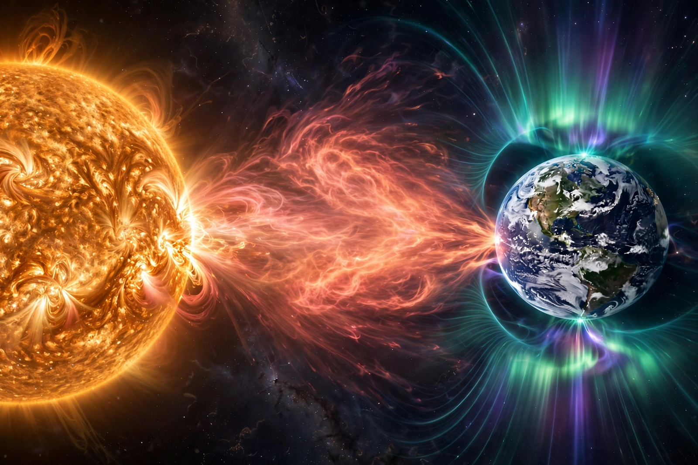

Space weather

| Space weather | |
|---|---|
| Phenomena | Solar flares, coronal mass ejections, solar wind, geomagnetic storms |
| Effects | Satellite damage, radio blackouts, power-grid disturbance, auroras |
| Key monitors | NOAA SWPC, DSCOVR, SOHO, ACE |
Space weather is a branch of space physics and aeronomy concerned with the time-varying conditions within the Solar System, including the solar wind, and especially the environment around Earth — the magnetosphere, ionosphere, thermosphere and exosphere. Space weather is distinct from terrestrial weather of the troposphere and stratosphere, but the conditions it describes can disrupt technology in orbit and on the ground.
The principal driver of space weather is the Sun. Solar flares release bursts of electromagnetic radiation that can cause radio blackouts on the dayside of Earth within minutes. Coronal mass ejections (CMEs) hurl billions of tonnes of magnetised plasma into space; when a CME reaches Earth one to three days later it can trigger a geomagnetic storm, compressing and energising the magnetosphere.
Effects
Geomagnetic storms induce electric currents in long conductors, which have damaged power grids — most famously causing the nine-hour blackout of Québec in March 1989. Storms heat and expand the upper atmosphere, increasing drag on satellites and degrading their orbits; they disturb high-frequency radio propagation and the accuracy of GPS signals; and enhanced radiation exposes astronauts and aircrew on polar routes to elevated doses. The same storms produce spectacular auroras visible far from the poles. The most extreme known event, the Carrington Event of 1859, disrupted telegraph systems worldwide; a storm of that magnitude today could cause widespread technological damage.
Forecasting
Forecasting is coordinated in the United States by NOAA's Space Weather Prediction Center and internationally through agencies and the International Space Environment Service. Sentinels stationed at the Sun–Earth L1 point, about 1.5 million kilometres sunward of Earth — including the DSCOVR spacecraft — measure the speed, density and magnetic field of the solar wind, giving forecasters 15 to 60 minutes of warning before a disturbance arrives.
See also: Magnetosphere · Van Allen radiation belt · Solar cycle · K-index